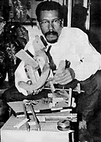

Hace 16 años nació el taller "La Pandora con ruedas". Ya Chuo se había graduado de profesor y estaba trabajando como promotor cultural del CONAC.
Su habilidad con la madera le permitía soñar con tener algún día un taller donde todos aprendieran a construir los juguetes que a diario utiliza el niño venezolano. Ese día, por supuesto llegó y así se mantuvo Chuo de Caracas, a Barquisimeto, a Bolívar, hasta que se queda en Barquisimeto por seis años.
Luego su taller cambia de nombre: "Diálogo con el Viento" y se encuentra ubicado en la calle Carvajal con Chimborazo, número 227 de Maturín, cuya función es rescatar los juegos tradicionales venezolanos, esos juguetes que muchas veces observamos por allí hechos en cartón o en madera. El taller de Chuo hace maravillas y es que si los observamos nos provoca jugar. Tenemos yoyos, zarandas, gurrufíos, muñecas de trapo, caballitos de madera, en fín, una gama espectacular para que nuestros niños jueguen a lo criollo.
Los juguetes pueden ser observados, admirados y comprados en el pequeño espacio donde funciona el taller, en el que se inició el camino hacia el rescate antropológico del juguete venezolano y donde además se desarrolla el aspecto estético con un slogan: "Cada vez que lanzo cae en el centro del mundo", lo que de por sí nos da una idea de lo optimista que es Chuo Galindo y sus alumnos.